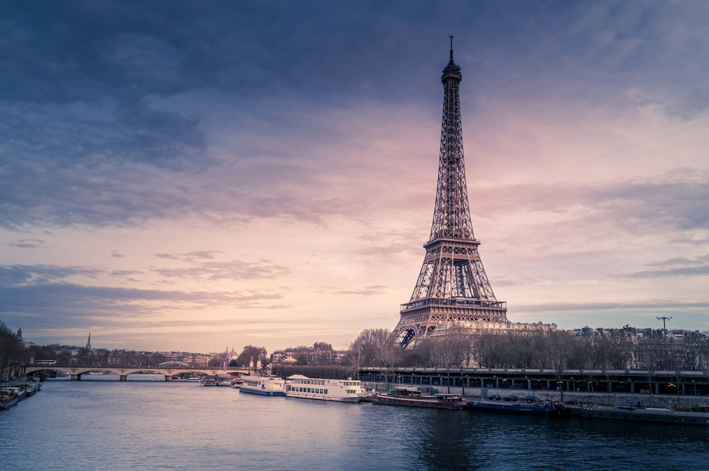

| Главная | Архитектура | Культура | Язык | Прогулка | Галерея | |
| Анкета | DOM | Кириллица / латиница | Задача 1009 | Таблица памятников | ЮНЕСКО: берега Сены |
Фотографический альбом: конструкция, свет и перспектива.
Альбом | Открытка крупным планом
|
 Эйфелева башня над Сеной в вечернем свете |

Эйфелева башня со стороны Трокадеро |

Мост Александра III и вечерние фонари |
|
|
Миниатюра. В сумерках легче заметить роль освещения. Фонари выделяют ритм моста, а силуэты скульптур связывают передний план с панорамой города. |